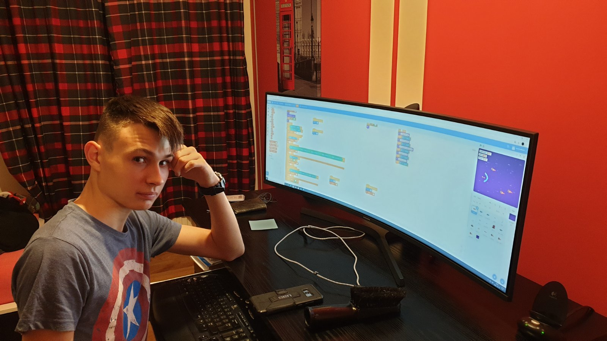
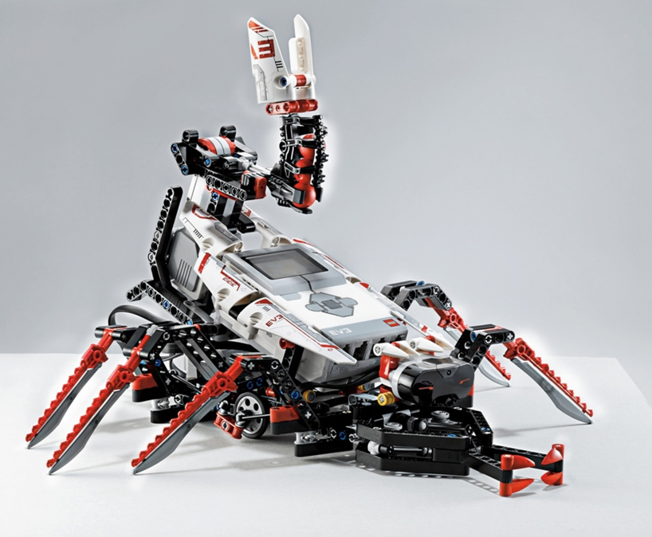

Rólam
A nevem Fazekas Márton, 2004 március 16.-án születtem. Jelenleg diákként tanulok a Petrik Lajos Két Tanítási Nyelvű Technikum-ban. 2019-ben kezdtem el programozást tanulni.
Elérhetőségeim
- E-mail: fazekas.marton@petrik.hu
- Facebook: Fazekas Márton
- Instagram: martinpotter316
Képességeim\Tapasztalataim
Már egy éve foglalkozok weblap készítéssel önszorgalomból. Elég tapasztalt vagyok HTML és CSS terén. Nem rég elkezdtem foglalkozni Javascript-tel. Sokat foglalkozok Scratch-csel és Lego Mindstorms-szal. Könnyen tanulok és gyorsan tanulok.
Iskoláim
Nyolc évig jártam a Diadal Úti Általános Iskola'-ba, majd a Petrik Lajos Két Tanítási Nyelvű Technikum-ban folytattam tanulmányomat.
Hobbiaim/Kendvenc tantárgyaim
|  |  |
 |
|
Szabadidőmben gyakran csinálok saját weboldalakat gyakorlásból. Ritákábban Lego robotot építek és programozok be. Nem szoktam gyakran sportolni, de néhanapján íjászkodok. Minden télen elmegyek a családommal sielni Eplénybe. Kedvenc tantárgyam a programozás, hiszen szeretek programozással foglalkozni. Mivel elég sűrűek a napjaim, nem igazán szeretnék tanulás mellet dolgozni.
Céljaim
Ha kijártam az iskolát, egy olyan nagyobb cégnek szeretnék dolgozni, ami játékfejlesztéssel vagy weblapfejlesztéssel foglalkozik. Hosszútávon szeretnék egy saját céget alapítani, ami FPS játékokat fejleszt.